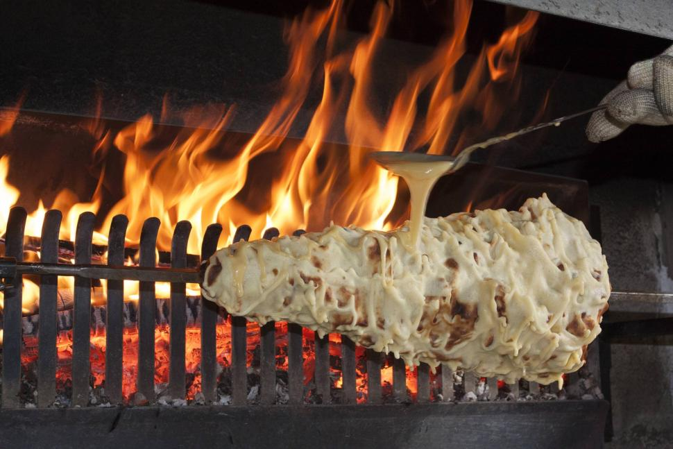

Gâteau à la broche

Description
Le gâteau à la broche est une des specialités les plus apreciée en Aveyron pour les célebrations et bien qu’on le trouve facilement sur les marchés aveyronnais, dans beaucoup de familles, la tradition veut que l’on sorte tout l’attirail nécessaire pour le faire artisanalement. Un aveyronnais connait forcément quelqu’un qui sait comment le concocter et tout le monde met la main à la pâte ! Un moment de convivialité assuré, les traditions qui se transmettent.
Ingrédients
- Farrine
- Oeufs
- Beurre
- Lait
- Sucre
- 5 cuillères de rhum
- 1 cuillère de sucre à café de fleur d'oranger
Etapes
- Battre dans une bassine les blancs d’œufs en neige. Délayer les jaunes dans un autre récipient. Sur un feu doux, faire fondre le beurre et y ajouter le sucre en remuant jusqu’à ce que le liquide soit homogène.
- Dans ce liquide, incorporer, peu à peu, les jaunes et, ceuiller par ceuiller, farine et blancs en remuant jusqu’à ce que la pâte ressemble à une pâte à madeleine.
- Mettre le rhum, eau de fleur d’oranger.
- Entourer la broche (et son cône) d’un papier huilé fixé par une ficelle.
- Mettre devant un feu assez vif, don la flamme est coupée par un récipient, la broche sur le tournebroche. Sous la broche, un récipient à recevoir la pâte qui coule.
- Mettre, ceuiller par ceuiller, la pâte sur la broche, recueillir celle qui tombe. Tourner jusqu’à ce que cette petite couche soit dorée. Remettre de la pâte et ainsi de suite, jusqu’à épuisement.